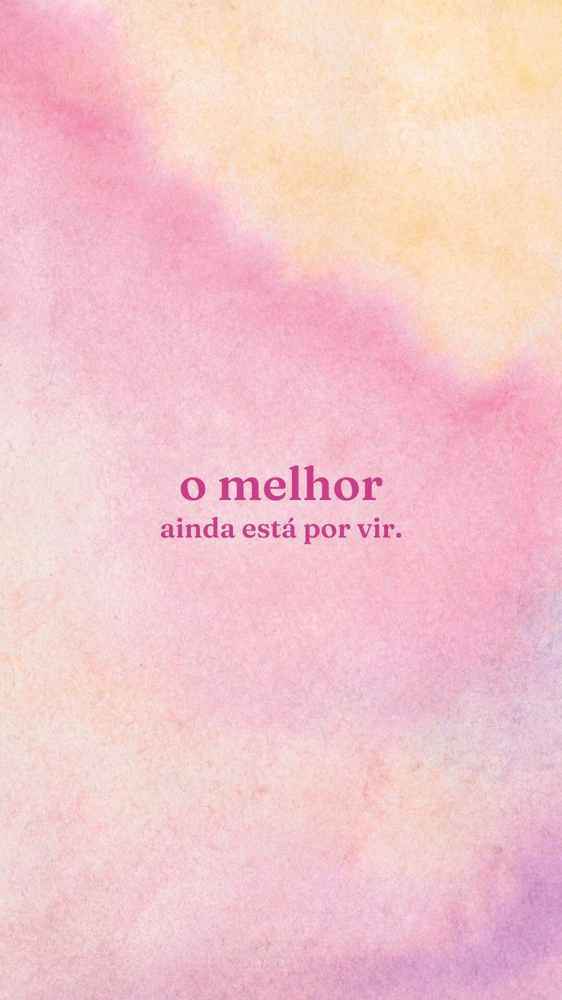

Olá, me chamo Kerolin, mais conhecida como Ke ou Ke Souza, gosto de animais, cuidar da casa, cuidar de quem amo, sinto fome toda hora.
Sou uma menina/mulher batalhadora dês de nova, por incrível que não pareça mas tenho paciência, acredito que tudo é no tempo de Deus, sou muito feliz e ainda quero realizar muitos sonhos.